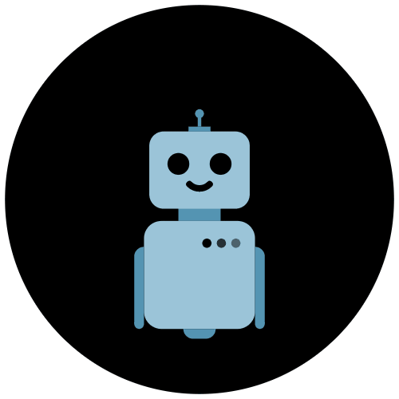

<!-- Chatbot Icon -->
<div id="chatbot-launcher">
  
</div>

<!-- Chatbot Box -->
<div id="chatbot-box" class="hidden">

  <div id="chat-header">Pekan Go</div>
  <div id="chat-body">

    <!-- Suggested Questions -->
    <div class="suggested">
      <p>Try asking:</p>
      <button class="suggest-btn">Top Attractions</button>
      <button class="suggest-btn">Local Food</button>
      <button class="suggest-btn">Events</button>
    </div>

    <!-- Chat Messages Display -->
    <div id="chat-messages"></div>

    <!-- Input Area -->
    <div class="chat-input-area">
     <label for="image-upload" id="upload-icon" title="Upload Image">
  📎
</label>
<input type="file" id="image-upload" accept="image/*" style="display: none;">
<input type="text" id="user-input" placeholder="Ask about tourism in Pekan...">
<button id="send-btn">Send</button>

    </div>

  </div>
</div>
